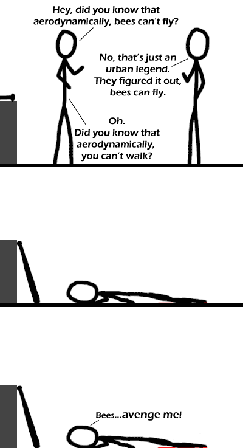

Comic JK 241
When I Feel Like It
⇤
<
?
>
⇥

⇤
<
?
>
⇥
Forum
.
RSS
.
Digg
.
Facebook
.
Reddit
.
Twitter
.
Stumbleupon
Enter your thoughts on number 241 here. Please, no spamming, trolling, or dividing by zero. "OH SHI-*ZWOOOOOO O I love the movement of thO O Whoa, now there's a thirdO O That's not aerodynamics. O >(See the title-text) O O Did you know that, aerodyO O ( Just for completeness, O cannot fly" myth comes frO aircrObecause bees *aren'O wings Othe fact that modeO valid answers. ) O >TLDR O O ^^ that was totally not nO >Hey, I enjoyed the randoO >Me too, I've heard this O answer :) O O >>so someone took the timO read... seriously - is thO O If it were true that "aerO do. Logic defeats stupidiO O Don't be so sure... O I once knew a kid who couO But then someone told himO He couldnt afford a jetpaO O O O O ...Just Kidding!!!! O O O Also, I think that JK is O anything. O >JK stands for something O >>On a related note, I amO the comic reaches number O O O >Well, JK *does* try to eO e.g. the faceless stick fO "extra" line to the joke O "XKCD", but I had alwaysO >>I thor O O OOOOOOOOOOOOOOOOOOP* shit, sorry, shoulda warned me sooner!" Your mother likes division by zero. This joke will be confusing to our children's children's children who will not know what bees are because all the bees will be gone. Luckily all the people will be gone shortly after, so they won't be confused for too long.